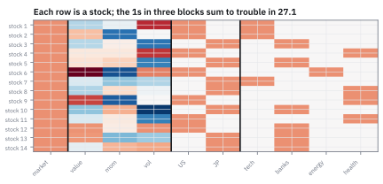
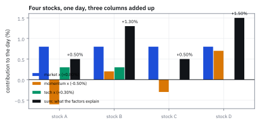
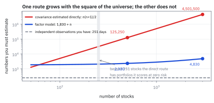
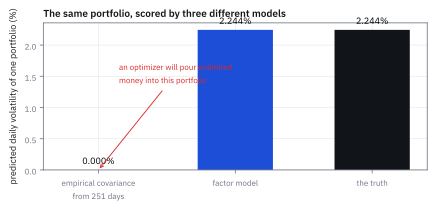

26.1 The Factor Model Equation and Three Ways to Read It
สมการเดียวที่ทั้ง Part นี้ตั้งอยู่บน และสามวิธีอ่านมัน
พอร์ตหุ้น 500 ตัว covariance matrix ของมันมีตัวเลขที่ต้องประมาณ 125,250 ตัว แต่คุณมีข้อมูลแค่ 251 วัน จะเกิดอะไรขึ้น และ factor model 60 factor ต้องประมาณกี่ตัว?
เฉลย: ถ้าใช้ covariance matrix จากข้อมูลตรง ๆ จะมีพอร์ตอย่างน้อย 249 พอร์ตที่แบบจำลองบอกว่าความเสี่ยงเป็นศูนย์พอดี ทั้งที่มันไม่ได้เป็นศูนย์เลย ส่วน factor model ต้องประมาณแค่ 2,330 ตัว น้อยกว่า 53.8 เท่า และไม่มีพอร์ตไหนที่ความเสี่ยงเป็นศูนย์ นั่นคือเหตุผลทั้งหมดที่เครื่องมือชิ้นนี้มีอยู่
ศัพท์ที่ใช้ในหัวข้อนี้
- factor model
- แบบจำลองที่แยกผลตอบแทนเป็นส่วนที่ขับด้วยแรงร่วมไม่กี่ตัว กับส่วนที่เป็นของหุ้นตัวนั้นเอง ใช้เป็นฐานของทุกอย่างในบทที่ 26 ถึง 32
- factor return
- ผลตอบแทนของแรงร่วมหนึ่งตัวในวันหนึ่ง เช่นวันนี้ตลาดขึ้นเท่าไร ใช้เป็นตัวสุ่มไม่กี่ตัวที่ขับหุ้นทั้งตลาด
- loading
- ตัวเลขที่บอกว่าหุ้นตัวนี้รับแรงจาก factor นั้นมากแค่ไหน ใช้เป็นข้อมูลที่รู้ล่วงหน้า ไม่ใช่สิ่งที่ต้องประมาณ
- loadings matrix
- ตารางของ loading ทุกหุ้นทุก factor ใช้เป็นตัวแปลงจาก factor return ไปเป็นผลตอบแทนหุ้น
- idiosyncratic return
- ส่วนของผลตอบแทนที่เหลือหลังหักแรงร่วมออก เป็นของหุ้นตัวนั้นล้วน ๆ ใช้เป็นที่มาของกำไรที่กระจายความเสี่ยงได้
- systematic component
- ส่วนของผลตอบแทนที่มาจาก factor ใช้เรียกความเสี่ยงที่กระจายไม่หายด้วยการถือหุ้นเยอะขึ้น
- style factor
- factor ที่ loading เป็นคุณสมบัติต่อเนื่องของหุ้น เช่น momentum หรือขนาด ใช้จับพฤติกรรมร่วมที่ไม่ได้มาจากอุตสาหกรรม
- industry factor
- factor ที่ loading เป็น 0 หรือ 1 ตามว่าหุ้นอยู่ในอุตสาหกรรมนั้นไหม ใช้จับการเคลื่อนไหวพร้อมกันของหุ้นกลุ่มเดียวกัน
- market factor
- factor ที่ทุกหุ้นมี loading เท่ากับ 1 ใช้เป็นจุดตัดของสมการ และทำให้ exposure บอกว่าพอร์ต long หรือ short สุทธิ
- dummy variable
- ตัวแปรที่รับค่า 0 หรือ 1 เท่านั้น ใช้เข้ารหัสการเป็นสมาชิกของกลุ่ม
- factor exposure
- ผลรวมของ loading ถ่วงด้วยขนาดสถานะ บอกว่าพอร์ตทั้งกองรับแรงจาก factor นั้นกี่ดอลลาร์ ใช้เป็นภาษาหลักของ risk report
- z-score
- การแปลงตัวเลขให้ค่าเฉลี่ยเป็นศูนย์และความผันผวนเป็นหนึ่ง ใช้ทำให้ loading ของ style factor เทียบกันได้
- strict factor model
- แบบจำลองที่สมมติว่า idiosyncratic return ของหุ้นต่างตัวไม่สัมพันธ์กันเลย ใช้เป็นจุดตั้งต้นก่อนผ่อนเงื่อนไขในหัวข้อ 27.4
- precision matrix
- ตัวผกผันของ covariance matrix ใช้เป็นหัวใจของการหาพอร์ตที่ดีที่สุดในบทที่ 30
- Net Market Value (NMV)
- ผลรวมของสถานะโดยใส่เครื่องหมาย long เป็นบวก short เป็นลบ ใช้บอกว่าพอร์ตเอียงไปทางไหนสุทธิ
- Gross Market Value (GMV)
- ผลรวมของขนาดสถานะโดยไม่สนเครื่องหมาย ใช้วัดว่าพอร์ตใหญ่แค่ไหนจริง ๆ
- dollar-neutral
- พอร์ตที่ผลรวมของสถานะเป็นศูนย์ ใช้แยกให้ชัดจากการไม่มีความเสี่ยงจาก factor ซึ่งเป็นคนละเรื่อง
สัญลักษณ์ที่ใช้ในหัวข้อนี้
| สัญลักษณ์ | ความหมาย | หน่วย |
|---|---|---|
| $n,\ m$ | จำนวนหุ้น และจำนวน factor | จำนวน |
| $\mathbf r_t$ | ผลตอบแทนส่วนเกินของหุ้นทุกตัว วัน t | decimal |
| $\boldsymbol\alpha$ | ผลตอบแทนคาดหวังส่วนที่ไม่ได้มาจาก factor | decimal |
| $\mathbf B$ | loadings matrix ขนาด $n\times m$ | unitless |
| $\mathbf f_t$ | factor return วัน t | decimal |
| $\boldsymbol\epsilon_t$ | idiosyncratic return วัน t | decimal |
| $\mathbf w$ | เงินที่ลงในแต่ละหุ้น ติดลบได้เมื่อ short | USD |
| $\mathbf b$ | factor exposure ของพอร์ต เท่ากับ $\mathbf B^{\mathsf T}\mathbf w$ | USD |
| $\boldsymbol\Omega_f$ | covariance matrix ของ factor return ขนาด $m\times m$ | decimal² |
| $\boldsymbol\Omega_\epsilon$ | covariance matrix ของ idiosyncratic return ขนาด $n\times n$ | decimal² |
| $\boldsymbol\Omega_r$ | covariance matrix ของผลตอบแทนหุ้น | decimal² |
| $T$ | จำนวนวันที่มีข้อมูล | วันทำการ |
ที่มาที่ไป: ทำไมถึงต้องมีสมการนี้
บทที่ 25 จบลงที่หุ้นตัวเดียว ถ้ามีหุ้นสามพันตัว วิธีที่ตรงไปตรงมาที่สุดคือทำแบบเดิมสามพันครั้ง แต่นั่นทิ้งสิ่งที่สำคัญที่สุดไป หุ้นไม่ได้เคลื่อนไหวแยกกัน วันที่ตลาดร่วง มันร่วงพร้อมกันเกือบหมด
ทางเลือกที่สองคือประมาณ covariance ของทุกคู่ ซึ่งฟังดูสมบูรณ์แบบ แต่ที่หุ้น 500 ตัวมีคู่ทั้งหมด 125,250 คู่ ขณะที่ข้อมูลหนึ่งปีมีแค่ 251 วัน เท่ากับพยายามหาค่า 125,250 ตัวจากสมการ 251 สมการ ซึ่งเป็นไปไม่ได้ และผลที่ออกมาไม่ได้แค่ไม่แม่น แต่พังในแบบที่อันตรายมาก ขั้นที่ 6 จะแสดงให้เห็นว่าพังอย่างไร
ทางออกคือสมมติว่าการเคลื่อนไหวพร้อมกันทั้งหมดมาจากแรงร่วมไม่กี่ตัว สมมติฐานนี้ไม่ได้จริงเป๊ะ แต่มันใกล้พอ และมันเปลี่ยนปัญหาที่แก้ไม่ได้ให้เป็นปัญหาที่แก้ได้ในเสี้ยววินาที
โจทย์: พอร์ตสี่ตัว สาม factor หนึ่งวัน
โจทย์ให้อะไรมาบ้าง หุ้นสี่ตัว A B C D กับสาม factor คือ market ซึ่งทุกตัวมี loading เท่ากับ 1 momentum ซึ่ง loading เป็น z-score และ tech ซึ่งเป็น 0 หรือ 1 loading ของทั้งสี่ตัวคือ A มี momentum 1.2 และอยู่ใน tech B มี momentum −0.4 และอยู่ใน tech C มี momentum 0.6 ไม่อยู่ใน tech D มี momentum −1.4 ไม่อยู่ใน tech
วันนี้ factor return คือ market +0.80% momentum −0.50% tech +0.30% และ idiosyncratic return คือ A +0.40% B −0.25% C +0.15% D −0.60% พอร์ตถือ A \$3 ล้าน B −\$2 ล้าน C \$4 ล้าน D −\$5 ล้าน
ต้องหาห้าอย่าง ผลตอบแทนของหุ้นแต่ละตัว factor exposure ของพอร์ต PnL แยกเป็นสองก้อน ความเสี่ยงของพอร์ตแยกเป็นสองก้อน และจำนวน parameter ที่ประหยัดได้เมื่อขยายเป็น 500 ตัว
ขั้นที่ 1 — สมการ และผลตอบแทนของหุ้นแต่ละตัว
นี่คือนิยามของ factor model ทั้งหมด ผลตอบแทนคือสามก้อนบวกกัน ส่วนที่คาดหวังไว้ ส่วนที่มาจากแรงร่วม และส่วนที่เป็นของหุ้นตัวนั้นเอง โจทย์นี้ให้ $\boldsymbol\alpha$ เป็นศูนย์เพื่อให้เห็นสองก้อนหลังชัด ๆ
ดู B กับ D เทียบกัน ทั้งคู่มี momentum ติดลบ จึงได้กำไรจากวันที่ momentum ร่วง แต่ B อยู่ใน tech ด้วยและ tech ขึ้น ขณะที่ D โดน idiosyncratic ลบหนัก ผลสุดท้าย B ได้ 1.05% ส่วน D ได้ 0.90%
ประเด็นคือ ผลตอบแทนที่เห็นของหุ้นตัวหนึ่งเป็นผลรวมของหลายเรื่อง และสมการนี้แยกมันออกจากกันได้ ถ้าไม่แยก จะไม่มีทางรู้ว่า D แย่กว่า B เพราะหุ้นแย่ หรือเพราะบังเอิญไม่ได้อยู่ในกลุ่มที่ขึ้นวันนี้
Figure 26.1a — หน้าตาของ loadings matrix จริง แบ่งเป็นสามบล็อก

แต่ละแถวคือหุ้นหนึ่งตัว แต่ละคอลัมน์คือ factor หนึ่งตัว บล็อกซ้ายคือ style ซึ่งเป็นตัวเลขต่อเนื่องที่ผ่าน z-score แล้ว บล็อกกลางคือ country และบล็อกขวาคือ industry ซึ่งเป็น 0 กับ 1 และรวมกันได้ 1 ในทุกแถว โครงสร้างนี้เองที่จะสร้างปัญหาในหัวข้อ 27.1
ขั้นที่ 2 — อ่านแบบที่หนึ่ง: หุ้นทั้งตลาดห้อยอยู่กับแรงไม่กี่ตัว
มองทีละหุ้น สมการบอกว่าผลตอบแทนคาดหวังของหุ้น i เมื่อรู้ factor return แล้ว คือผลคูณจุดของ loading แถวนั้นกับ factor return
ในแบบจำลองจริงของภูมิภาคหนึ่ง มีหุ้นได้ถึงหมื่นตัวและ factor ราวร้อยตัว ภาพที่ควรมีในหัวคือวงกลมร้อยวงข้างบน สี่เหลี่ยมหมื่นอันข้างล่าง และเส้นเชื่อมที่เบาบางมาก เพราะหุ้นหนึ่งตัวแตะ factor แค่ไม่กี่ตัว คือ market หนึ่งตัว industry หนึ่งตัว country หนึ่งตัว และ style อีกสิบกว่าตัว
ขั้นที่ 3 — อ่านแบบที่สอง: ภาพตัดขวางคือผลรวมของเสาไม่กี่เสา
คราวนี้มองทั้งตลาดพร้อมกันในวันเดียว จัดกลุ่มสมการใหม่ตามคอลัมน์แทนแถว จะเห็นว่า vector ผลตอบแทนของหุ้นทุกตัวเป็นผลรวมถ่วงน้ำหนักของ vector ไม่กี่ตัว
สิ่งที่การอ่านแบบนี้ทำให้เห็นคือมิติ ผลตอบแทนของหุ้นสี่ตัวควรเป็นจุดในปริภูมิสี่มิติ แต่ส่วนที่มาจาก factor ถูกบังคับให้อยู่ในปริภูมิสามมิติที่สร้างจากสามเสานั้น
ที่หุ้น 500 ตัวกับ 60 factor ตัวเลขนี้น่าตกใจกว่ามาก ภาพตัดขวางที่เป็นไปได้มี 500 มิติ แต่ส่วนที่ factor อธิบายได้ถูกขังอยู่ใน 60 มิติ ที่เหลืออีก 440 มิติคือ idiosyncratic ล้วน ๆ และนั่นคือที่ที่กำไรที่กระจายความเสี่ยงได้อาศัยอยู่ ซึ่งเป็นเรื่องของหัวข้อ 26.2
Figure 26.1b — ภาพตัดขวางของวันหนึ่ง คือผลรวมของเสาไม่กี่เสา

สามแท่งซ้ายคือคอลัมน์ของ loadings matrix แต่ละคอลัมน์คูณด้วย factor return ของวันนั้น แท่งขวาสุดคือผลรวม ซึ่งเป็นส่วนที่ factor อธิบายได้ของผลตอบแทนทั้งสี่ตัว ส่วนที่เหลือจากนี้คือ idiosyncratic
ขั้นที่ 4 — อ่านแบบที่สาม: ทั้งพอร์ตยุบเหลือ exposure ไม่กี่ตัว
คูณสมการด้วย vector ของสถานะ แล้วจัดกลุ่มใหม่ ผลคือ PnL ของพอร์ตทั้งกองแยกเป็นสองก้อนชัดเจน โดยก้อนแรกมีมิติเท่ากับจำนวน factor ไม่ใช่จำนวนหุ้น
ตรวจเองใน 10 วินาที คูณสถานะกับผลตอบแทนตรง ๆ 3(0.90%) − 2(1.05%) + 4(0.65%) − 5(0.90%) เป็นล้านดอลลาร์ ได้ 0.027 − 0.021 + 0.026 − 0.045 = −0.013 ล้าน ตรงกับ −\$13,000 พอดี สองเส้นทางให้คำตอบเดียวกันเสมอ
บทเรียนที่สำคัญที่สุดของหัวข้อนี้อยู่ตรงนี้ พอร์ตนี้ dollar-neutral เป๊ะ ๆ ผลรวมของสถานะเป็นศูนย์ และ exposure ต่อ market ก็เป็นศูนย์ด้วย แต่มันเสียเงิน เพราะมันมี exposure ต่อ momentum อยู่ \$13.8 ล้าน โดยไม่ได้ตั้งใจ และวันนี้ momentum ร่วง 0.50%
dollar-neutral ไม่เท่ากับ risk-neutral ตัวเลข 13.8 นั้นซ่อนอยู่หลัง NMV ที่เป็นศูนย์ และจะมองไม่เห็นเลยถ้าไม่มี factor model คนที่ดูแค่ NMV กับ GMV จะคิดว่าพอร์ตนี้ปลอดภัย
แล้วเอาไปใช้ทำอะไรได้จริงบ้าง
exposure vector ที่ยาว 60 ตัวคือภาษาที่ risk manager กับ portfolio manager ใช้คุยกัน แทนที่จะพูดถึงหุ้นสามพันตัว ทุกคนดูตัวเลข 60 ตัวเดียวกัน และรู้ทันทีว่าพอร์ตกำลังพนันอะไรอยู่
บนโต๊ะจริง รายงานตอนเช้าคือ exposure ทั้ง 60 ตัวพร้อมขีดจำกัดของแต่ละตัว ถ้าเกินขีด ระบบจะบังคับให้เทรดกลับมา ตัวเลข 13.8 ในขั้นที่ 4 จะโดนจับได้ทันทีในระบบแบบนั้น แต่จะรอดสายตาไปได้ทั้งเดือนในระบบที่ดูแค่ NMV
ขั้นที่ 5 — ความเสี่ยงก็แยกเป็นสองก้อนเหมือนกัน
หา covariance matrix ของผลตอบแทนหุ้นจากสมการในขั้นที่ 1 เนื่องจาก $\mathbf f$ กับ $\boldsymbol\epsilon$ เป็นอิสระกัน variance ของผลรวมจึงเป็นผลรวมของ variance และการแปลงเชิงเส้นด้วย $\mathbf B$ ทำให้ covariance กลายเป็น $\mathbf B\boldsymbol\Omega_f\mathbf B^{\mathsf T}$
ตัวเลขที่ใช้คือ factor volatility รายวัน market 1.00% momentum 0.35% tech 0.55% กับ correlation ระหว่าง market กับ momentum −0.20 market กับ tech +0.50 momentum กับ tech −0.10 และ idiosyncratic volatility ของ A B C D คือ 1.80% 2.20% 1.50% 2.60%
สัดส่วนที่ได้คือ idiosyncratic 91.65% และ factor 8.35% ซึ่งสูงมากเพราะพอร์ตมีหุ้นแค่สี่ตัว ในพอร์ตจริงที่มีหุ้นหลายร้อยตัว idiosyncratic variance จะกระจายหายไปเกือบหมด และสัดส่วนมักพลิกกลับเป็น factor 60 ถึง 80%
สังเกตว่าความเสี่ยงบวกกันแบบกำลังสอง ไม่ใช่บวกตรง ๆ \$48,063 กับ \$159,223 รวมกันได้ \$166,319 ไม่ใช่ \$207,286 นั่นคือการกระจายความเสี่ยงระหว่างสองแหล่งที่ไม่สัมพันธ์กัน
ขั้นที่ 6 — นับ parameter และดูว่าทางเลือกอีกทางพังอย่างไร
ขยายเป็นขนาดจริง หุ้น 500 ตัว factor 60 ตัว ข้อมูล 251 วัน นับว่าแต่ละทางต้องประมาณกี่ตัว แล้วดูผลที่ตามมาของทางที่ดูเหมือนสมบูรณ์แบบกว่า
บรรทัดล่างสุดคือเหตุผลที่แท้จริง ไม่ใช่แค่เรื่องประหยัด covariance matrix ที่คำนวณจาก 251 วันมี rank ไม่เกิน 251 พอร์ตอย่างน้อย 249 พอร์ตจึงได้ความเสี่ยงที่คำนวณได้เป็นศูนย์พอดี
ผลที่ตามมาร้ายแรงกว่าที่คิด optimizer ในบทที่ 30 จะหาพอร์ตที่ให้ผลตอบแทนคาดหวังสูงสุดต่อความเสี่ยง ถ้ามีพอร์ตที่ความเสี่ยงเป็นศูนย์ optimizer จะทุ่มเงินเข้าไปไม่จำกัด และรายงาน Sharpe Ratio ที่ไม่มีที่สิ้นสุด ทั้งที่พอร์ตนั้นเสี่ยงเต็มที่ในโลกจริง
factor model ไม่มีปัญหานี้เลย เพราะ $\boldsymbol\Omega_\epsilon$ เป็น diagonal ที่ทุกตัวเป็นบวก ผลรวมจึงเป็น positive definite เสมอ ไม่ว่าข้อมูลจะสั้นแค่ไหน และตัวผกผันของมันมีอยู่จริงเสมอ
ข้อสังเกตเรื่องการนับ loading 30,000 ตัวไม่ได้อยู่ในรายการที่ต้องประมาณ เพราะมันคือข้อมูล เรารู้ว่าหุ้นตัวไหนอยู่อุตสาหกรรมไหนและมี momentum เท่าไร โดยไม่ต้องเดาจากผลตอบแทน นั่นคือสิ่งที่ทำให้ fundamental factor model ในบทที่ 27 ต่างจาก statistical factor model ในบทที่ 28
Figure 26.1c — จำนวนตัวเลขที่ต้องประมาณ เทียบกับข้อมูลที่มี

แกนนอนคือจำนวนหุ้น แกนตั้งคือจำนวนตัวเลขที่ต้องประมาณ บนสเกล logarithm เส้นบนโตแบบกำลังสองตามจำนวนหุ้น เส้นล่างโตแบบเชิงเส้น เส้นประคือจำนวนข้อมูลที่มีจริงใน 251 วัน จุดตัดคือจุดที่ covariance ตรง ๆ เริ่มมีพอร์ตที่ความเสี่ยงคำนวณได้เป็นศูนย์
Figure 26.1d — พอร์ตที่แบบจำลองบอกว่าไม่มีความเสี่ยง แต่จริง ๆ มี

สร้างหุ้น 500 ตัวจาก factor model จริง แล้วหาพอร์ตที่ covariance matrix จากข้อมูล 251 วันบอกว่าความเสี่ยงเป็นศูนย์ แท่งซ้ายคือความเสี่ยงที่แบบจำลองนั้นทำนาย ซึ่งเป็นศูนย์ แท่งขวาคือความเสี่ยงจริงของพอร์ตเดียวกัน ส่วนแท่งกลางคือสิ่งที่ factor model ทำนายไว้ ซึ่งใกล้ความจริง
กับดัก: สับสนระหว่าง dollar-neutral กับ risk-neutral และคิดว่า loading ต้องประมาณ
กับดักแรกคือกับดักที่ขั้นที่ 4 แสดงให้เห็น พอร์ตที่ NMV เป็นศูนย์และ exposure ต่อ market เป็นศูนย์ ยังมี exposure ต่อ momentum ได้ \$13.8 ล้านบน GMV แค่ \$14 ล้าน ซึ่งเท่ากับเกือบร้อยเปอร์เซ็นต์ นี่ไม่ใช่กรณีประดิษฐ์ พอร์ตที่สร้างจากการเลือกหุ้นทีละตัวมักสะสม exposure แบบนี้โดยไม่มีใครตั้งใจ เพราะคนที่เลือกหุ้นเลือกตามเหตุผลที่สัมพันธ์กับ style factor อยู่แล้ว
กับดักที่สองคือคิดว่า loading เป็นสิ่งที่ต้องประมาณจากข้อมูลผลตอบแทน ใน fundamental factor model มันไม่ใช่ loading ของ industry มาจากการจัดประเภทบริษัท loading ของ momentum มาจากผลตอบแทน 12 เดือนที่ผ่านมา ทั้งหมดรู้ได้ตั้งแต่ก่อนวันเทรดเริ่ม สิ่งที่ประมาณคือ factor return ซึ่งเป็นตัวเลขแค่ 60 ตัวต่อวัน
กับดักที่สามคือจำวันที่ข้อมูลใช้ได้จริงผิด ผู้ให้บริการส่วนใหญ่ประทับวันที่ของข้อมูลไว้ที่ สิ้น ช่วง ไม่ใช่ต้นช่วง แปลว่า loading ที่ควรใช้อธิบายผลตอบแทนของวันหนึ่ง คือ loading ที่ประทับวันก่อนหน้า การเผลอเลื่อนไปหนึ่งวันทำให้ผลตอบแทนของวันนั้นเองไหลเข้าไปอยู่ใน loading และสร้าง alpha ปลอมที่ดูดีมาก นี่คือกับดักที่หัวข้อ 29.1 จะกลับมาพูดถึงอีกครั้ง
ข้อจำกัด: สมการนี้สมมติอะไร และของจริงเป็นอย่างไร
| เรื่อง | สมการนี้สมมติว่า | ของจริงเป็นอย่างไร | ผลที่ตามมาเวลาใช้งาน |
|---|---|---|---|
| ความสัมพันธ์ | เป็นเชิงเส้น | มีความไม่เป็นเชิงเส้นอยู่บ้าง โดยเฉพาะในวันวิกฤต | แบบจำลองอธิบายวันปกติดีกว่าวันที่สำคัญที่สุด |
| idiosyncratic return | ไม่สัมพันธ์กันเลยระหว่างหุ้น | หุ้นคู่แฝดและหุ้นหลายชั้นราคายังสัมพันธ์กันสูง | ความเสี่ยงที่รายงานต่ำกว่าจริง ต้องจัดการอย่างในหัวข้อ 27.4 |
| loading | รู้แน่นอนและคงที่ในช่วงนั้น | เปลี่ยนทุกวันและมีความคลาดเคลื่อนในการจัดประเภท | exposure ที่รายงานมีความคลาดเคลื่อนติดมาด้วย |
| จำนวน factor | ครบถ้วน ไม่มีตัวที่ขาดไป | มีแรงร่วมที่ยังไม่ได้ใส่เสมอ | ความเสี่ยงที่ขาดไปโผล่เป็นความสัมพันธ์ใน idiosyncratic ซึ่งตรวจได้ |
แถวสุดท้ายคือเครื่องมือวินิจฉัยที่ใช้ได้จริง ถ้า factor ขาดไป มันจะทิ้งร่องรอยไว้ใน covariance ของ idiosyncratic return ซึ่งเป็นสิ่งที่หัวข้อ 27.4 สอนวิธีมองหา
ตรวจทุกตัวเลขของหัวข้อนี้
import numpy as np
B = np.array([[1, 1.2, 1], [1, -0.4, 1], [1, 0.6, 0], [1, -1.4, 0]], float)
f = np.array([0.008, -0.005, 0.003])
eps = np.array([0.004, -0.0025, 0.0015, -0.006])
w = np.array([3.0, -2.0, 4.0, -5.0]) # in USD million
# step 1: asset returns
r = B @ f + eps
assert np.allclose(r * 100, [0.90, 1.05, 0.65, 0.90])
assert abs((B @ f)[0] * 100 - 0.50) < 1e-12 # step 2, stock A's factor part
# step 3: the cross-section as a sum of columns
cols = sum(B[:, j] * f[j] for j in range(3))
assert np.allclose(cols, B @ f)
assert np.allclose(cols * 100, [0.50, 1.00, 0.50, 1.50])
# step 4: exposures and the PnL split
b = B.T @ w
assert np.allclose(b, [0.0, 13.8, 1.0])
assert w.sum() == 0.0 and np.abs(w).sum() == 14.0 # dollar-neutral, GMV 14M
fp, ip = b @ f * 1e6, w @ eps * 1e6
assert abs(fp - (-66_000)) < 1e-6 and abs(ip - 53_000) < 1e-6
assert abs(fp + ip - (w @ r) * 1e6) < 1e-6 # the two routes agree
assert abs((w @ r) * 1e6 - (-13_000)) < 1e-6
assert abs(b[1]) / np.abs(w).sum() > 0.98 # 98% of GMV in one hidden bet
# step 5: risk, also in two pieces
sf = np.array([0.010, 0.0035, 0.0055])
C = np.array([[1, -0.20, 0.50], [-0.20, 1, -0.10], [0.50, -0.10, 1]])
Of = np.outer(sf, sf) * C
se = np.array([0.018, 0.022, 0.015, 0.026])
vf, vi = b @ Of @ b, float((w ** 2 * se ** 2).sum())
assert abs(vf - 2.31001e-3) < 1e-9 and abs(vi - 2.53520e-2) < 1e-9
assert abs(np.sqrt(vf) * 1e6 - 48_063) < 1
assert abs(np.sqrt(vi) * 1e6 - 159_223) < 1
assert abs(np.sqrt(vf + vi) * 1e6 - 166_319) < 1
assert abs(vi / (vf + vi) - 0.9165) < 1e-4
Or = B @ Of @ B.T + np.diag(se ** 2) # the same number the long way
assert abs(np.sqrt(w @ Or @ w) - np.sqrt(vf + vi)) < 1e-15
assert np.sqrt(vf + vi) < np.sqrt(vf) + np.sqrt(vi) # risks add in quadrature
# step 6: the parameter count and the rank trap
n, m, T = 500, 60, 251
assert n * (n + 1) // 2 == 125_250
assert m * (m + 1) // 2 + n == 2_330
assert abs(125_250 / 2_330 - 53.755) < 1e-3
rng = np.random.default_rng(2)
Bn = rng.normal(0, 1, (n, m))
R = Bn @ rng.normal(0, 0.01, (m, T)) + rng.normal(0, 0.02, (n, T))
emp = R @ R.T / T
ev = np.linalg.eigvalsh(emp)
assert np.sum(ev < 1e-12) >= n - T # at least 249 zero directions
null = np.linalg.svd(R.T)[2][T:] # portfolios the data cannot see
w0 = null[0]
assert abs(w0 @ emp @ w0) < 1e-12 # predicted risk: exactly zero
true = Bn @ (np.eye(m) * 1e-4) @ Bn.T + np.eye(n) * 4e-4
assert np.sqrt(w0 @ true @ w0) > 0.01 # real risk: not zero at allบล็อกสุดท้ายสร้างหุ้น 500 ตัวจาก factor model จริง แล้วหาพอร์ตในทิศที่ข้อมูล 251 วันมองไม่เห็น covariance matrix จากข้อมูลบอกว่าความเสี่ยงของพอร์ตนั้นเป็นศูนย์เป๊ะ ๆ ขณะที่ความเสี่ยงจริงของมันมากกว่า 1% ต่อวัน นี่ไม่ใช่การประมาณที่ไม่แม่น แต่เป็นการพังทั้งชิ้น
ก่อนไปต่อ
ตอนนี้เรามีสมการและรู้วิธีอ่านมันสามแบบแล้ว คำถามถัดไปคือ ผลตอบแทนคาดหวังที่เรียกว่า alpha นั้นอยู่ตรงไหนของภาพนี้ และทำไมบางส่วนของมันถึงมีค่ามากกว่าส่วนอื่นอย่างมหาศาล
สรุปที่ใช้ได้จริง
- $\mathbf r_t=\boldsymbol\alpha+\mathbf B\mathbf f_t+\boldsymbol\epsilon_t$ แยกผลตอบแทนเป็นส่วนที่คาดหวัง ส่วนที่มาจากแรงร่วม และส่วนที่เป็นของหุ้นตัวนั้น ทั้ง Part นี้ตั้งอยู่บนสมการเดียวนี้
- อ่านได้สามแบบ ทีละหุ้นเป็นผลคูณจุด ทั้งตลาดเป็นผลรวมของเสาไม่กี่เสา และทั้งพอร์ตยุบเหลือ exposure $\mathbf b=\mathbf B^{\mathsf T}\mathbf w$ ที่ยาวเท่าจำนวน factor ไม่ใช่จำนวนหุ้น
- dollar-neutral ไม่เท่ากับ risk-neutral พอร์ตตัวอย่างมี NMV เป็นศูนย์และ exposure ต่อ market เป็นศูนย์ แต่มี exposure ต่อ momentum \$13.8 ล้านบน GMV \$14 ล้าน และเสียเงินจากตรงนั้น
- $\boldsymbol\Omega_r=\mathbf B\boldsymbol\Omega_f\mathbf B^{\mathsf T}+\boldsymbol\Omega_\epsilon$ ความเสี่ยงแยกเป็นสองก้อนและบวกกันแบบกำลังสอง \$48,063 กับ \$159,223 รวมได้ \$166,319 ไม่ใช่ \$207,286
- ที่หุ้น 500 ตัว covariance ตรง ๆ ต้องประมาณ 125,250 ตัวแต่มีข้อมูล 251 วัน จึงมีพอร์ตอย่างน้อย 249 พอร์ตที่ความเสี่ยงคำนวณได้เป็นศูนย์ ส่วน factor model ประมาณ 2,330 ตัวและ positive definite เสมอ